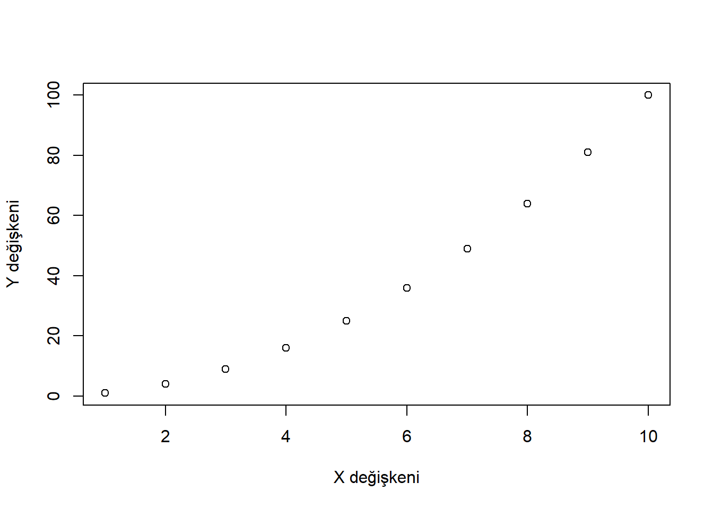
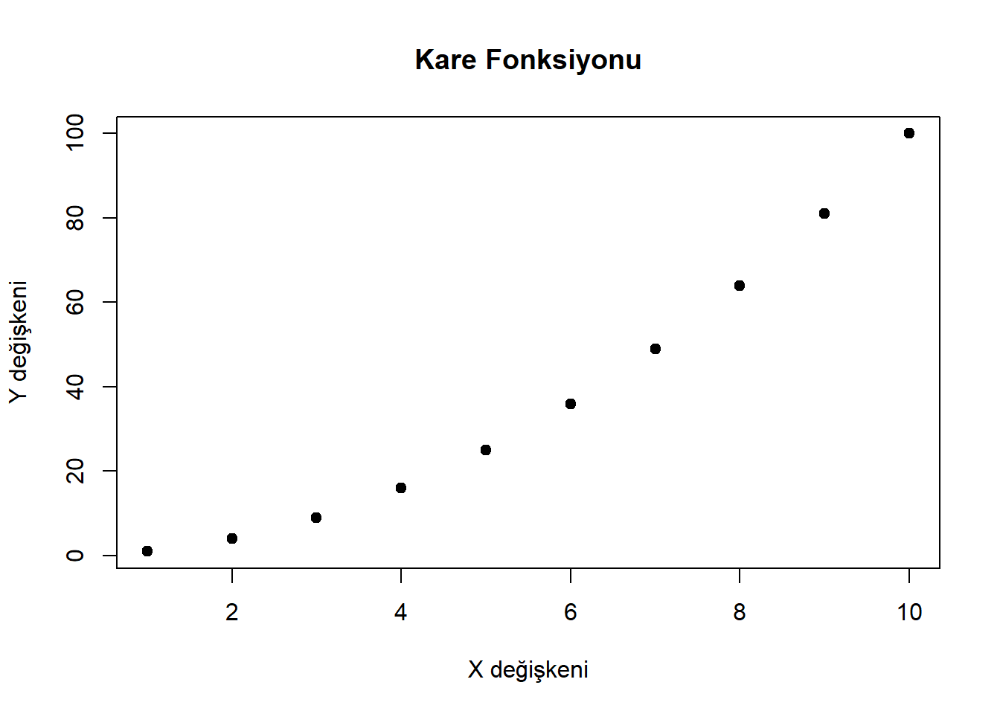
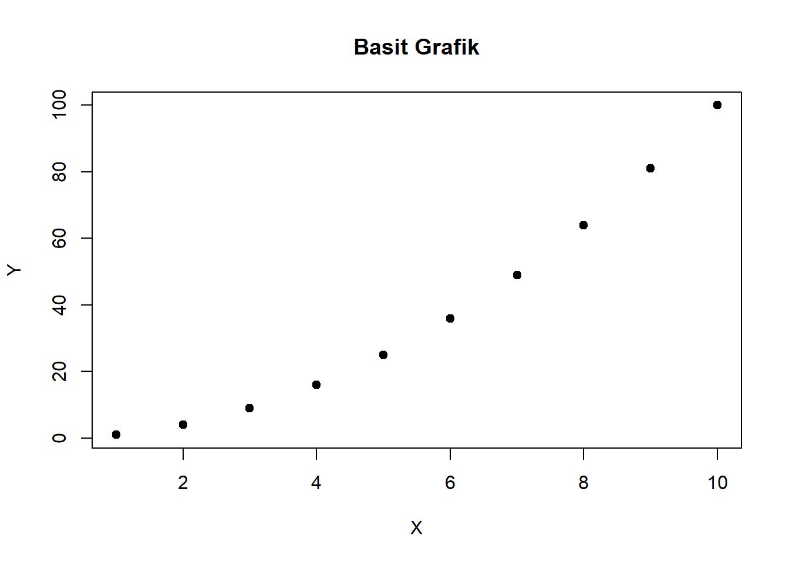

# sqrt() karekök hesaplar.
sqrt(16)[1] 4# mean() ortalama hesaplar.
mean(c(10, 20, 30))[1] 20# length() nesnenin uzunluğunu verir.
length(c("A", "B", "C"))[1] 3Programlama öğrenirken ilk aşamada genellikle komutları tek tek çalıştırırız. Bir veri seti okuruz, ortalama hesaplarız, grafik çizeriz, bir sonucu ekrana yazdırırız. Bu aşamada kod, çoğu zaman doğrusal bir akışa sahiptir: önce bunu yap, sonra bunu yap, ardından sonucu göster.
Ancak veri analizi gerçek hayatta bu kadar doğrusal ilerlemez. Aynı işlemi farklı değişkenler için tekrar etmek gerekir. Aynı hesaplama farklı veri setlerine uygulanır. Aynı grafik, farklı gruplar için üretilir. Aynı veri temizleme adımları farklı dosyalarda tekrar edilir. İşte bu noktada programlama becerisini geliştiren temel soru ortaya çıkar:
Aynı kodu tekrar tekrar yazmak yerine, bu işlemi bir kez tanımlayıp gerektiğinde tekrar kullanabilir miyim?
Bu sorunun cevabı fonksiyonlardır.
Fonksiyonlar, belirli bir görevi yerine getirmek için tasarlanan, tekrar kullanılabilir kod bloklarıdır. Bir fonksiyon girdi alabilir, bu girdiler üzerinde işlem yapabilir ve çıktı üretebilir. Fakat fonksiyonlar yalnızca kod tekrarını azaltan teknik araçlar değildir. Daha önemlisi, problemi parçalara ayırmayı, her parçaya açık bir görev vermeyi ve kodu daha anlaşılır bir yapıya dönüştürmeyi sağlar.
Bu nedenle fonksiyon yazmak, R öğreniminde önemli bir eşiktir. Fonksiyon yazmaya başlayan kişi artık yalnızca komutları kullanan biri değildir; kendi küçük araçlarını tasarlayan, analiz sürecini modüler hale getiren ve programlama düşüncesine yaklaşan kişidir.
Bu bölümde fonksiyon kavramını, R’de fonksiyon yazımını, argüman mantığını, varsayılan değerleri, return() kullanımını, kapsam (scope) kavramını, ... yani ellipsis kullanımını, hata yönetimini ve iyi fonksiyon tasarımının temel ilkelerini ele alacağız.
Matematikte fonksiyon, bir girdiyi belirli bir kurala göre çıktıya dönüştüren yapı olarak tanımlanır. Örneğin:
[ f(x) = x^2 ]
Bu fonksiyon, verilen x değerini alır ve karesini üretir. Eğer x = 4 ise sonuç 16 olur.
Programlamadaki fonksiyonlar da benzer mantığa sahiptir. Bir fonksiyon:
R’de sık kullandığımız birçok yapı aslında fonksiyondur.
# sqrt() karekök hesaplar.
sqrt(16)[1] 4# mean() ortalama hesaplar.
mean(c(10, 20, 30))[1] 20# length() nesnenin uzunluğunu verir.
length(c("A", "B", "C"))[1] 3Bu fonksiyonlarda ortak mantık aynıdır:
| Fonksiyon | Girdi | İşlem | Çıktı |
|---|---|---|---|
sqrt() |
sayı | karekök alma | sayı |
mean() |
sayısal vektör | ortalama alma | sayı |
length() |
vektör | eleman sayma | sayı |
Bu açıdan fonksiyonlar, programlamada “girdi → işlem → çıktı” ilişkisinin somutlaşmış halidir.
Fonksiyon yazmanın temel amacı yalnızca kodu kısaltmak değildir. Kodu daha güvenilir, okunabilir, tekrar kullanılabilir ve sürdürülebilir hale getirmektir.
Aynı kodu birçok kez yazmak hem zaman kaybıdır hem de hata riskini artırır.
x1 <- c(10, 20, 30)
x2 <- c(5, 15, 25)
x3 <- c(100, 120, 140)
mean(x1)[1] 20mean(x2)[1] 15mean(x3)[1] 120Bu örnekte sorun yok gibi görünür. Ancak hesaplama biraz daha karmaşık hale gelirse aynı kodu tekrar etmek yorucu olur.
# Standartlaştırma işlemi:
# Her değerden ortalama çıkarılır ve standart sapmaya bölünür.
(x1 - mean(x1)) / sd(x1)[1] -1 0 1(x2 - mean(x2)) / sd(x2)[1] -1 0 1(x3 - mean(x3)) / sd(x3)[1] -1 0 1Bunun yerine bir fonksiyon yazabiliriz.
standartlastir <- function(x) {
(x - mean(x)) / sd(x)
}
standartlastir(x1)[1] -1 0 1standartlastir(x2)[1] -1 0 1standartlastir(x3)[1] -1 0 1Bu kod daha kısa, daha okunabilir ve daha güvenilirdir.
Aynı formülü birçok yerde yazarsak, hata yapma ihtimalimiz artar. Bir yerde sd() yerine yanlışlıkla var() yazmak, sonuçları değiştirebilir. Fonksiyon kullanıldığında hesaplama mantığı tek bir yerde tanımlanır.
Şu kod teknik olarak doğrudur:
(x - mean(x)) / sd(x)Fakat şu kod niyeti daha açık gösterir:
standartlastir(x)İyi isimlendirilmiş bir fonksiyon, kodun ne yaptığını açıklayan küçük bir cümle gibi çalışır.
Bir kez yazılan fonksiyon farklı veri setlerinde, farklı projelerde ve farklı zamanlarda yeniden kullanılabilir.
Fonksiyonlar büyük bir problemi küçük parçalara ayırmamızı sağlar. Her fonksiyon tek bir göreve odaklanırsa, kodun tamamını anlamak ve test etmek kolaylaşır.
R’de fonksiyonlar yalnızca çağrılan komutlar değildir; aynı zamanda nesnedir. Bu nedenle bir fonksiyonun kendisini ekrana yazdırabilir, başka bir nesneye atayabilir veya başka fonksiyonlara argüman olarak verebiliriz.
meanfunction (x, ...)
UseMethod("mean")
<bytecode: 0x0000023d18b2aa50>
<environment: namespace:base>Bir nesnenin fonksiyon olup olmadığını is.function() ile kontrol edebiliriz.
is.function(mean)[1] TRUEis.function(sum)[1] TRUEis.function(data.frame)[1] TRUEBu özellik R’nin fonksiyonel programlama tarafını gösterir. R’de birçok işlem, fonksiyonların birbiriyle birlikte çalışması üzerine kuruludur.
R’de fonksiyonlar function() ifadesiyle tanımlanır.
Genel yapı şöyledir:
fonksiyon_adi <- function(argumanlar) {
# çalışacak kodlar
sonuc
}Basit bir örnek yazalım.
# x argümanını alıp karesini döndüren fonksiyon
kare_al <- function(x) {
x^2
}
kare_al(5)[1] 25kare_al(12)[1] 144Bu fonksiyonun bileşenleri:
kare_al: fonksiyonun adı,function: fonksiyon tanımlama ifadesi,x: argüman,x^2: fonksiyonun yaptığı işlem,Fonksiyon isimleri anlamlı seçilmelidir. f1, abc, test gibi isimler küçük denemelerde iş görse de gerçek projelerde kodun okunabilirliğini düşürür.
Fonksiyonun dışarıdan aldığı değerlere argüman denir. Argümanlar fonksiyonun esnekliğini sağlar.
topla <- function(x, y) {
x + y
}
topla(5, 8)[1] 13Burada x ve y fonksiyonun argümanlarıdır. Fonksiyon, verilen iki değeri toplar.
Daha açıklayıcı bir örnek:
# Dikdörtgen alanı hesaplayan fonksiyon
dikdortgen_alan <- function(uzunluk, genislik) {
uzunluk * genislik
}
dikdortgen_alan(uzunluk = 10, genislik = 4)[1] 40Argüman isimleri yalnızca teknik bir ayrıntı değildir. Fonksiyonun ne beklediğini okuyucuya anlatır.
R’de argümanlar iki şekilde verilebilir:
# Sıralı kullanım
dikdortgen_alan(10, 4)[1] 40# İsimli kullanım
dikdortgen_alan(uzunluk = 10, genislik = 4)[1] 40Sıralı kullanım kısa olabilir; ancak isimli kullanım daha okunabilirdir. Özellikle çok sayıda argümanı olan fonksiyonlarda isimli kullanım tercih edilmelidir.
# Argüman sırası değişse bile isimli kullanım doğru sonucu üretir.
dikdortgen_alan(genislik = 4, uzunluk = 10)[1] 40Fonksiyonlarda bazı argümanlara varsayılan değer verilebilir. Böylece kullanıcı o argümanı belirtmezse fonksiyon varsayılan değeri kullanır.
selamla <- function(isim = "Misafir") {
paste("Merhaba", isim)
}
selamla()[1] "Merhaba Misafir"selamla("Fatih")[1] "Merhaba Fatih"Varsayılan argümanlar fonksiyonu daha kullanıcı dostu hale getirir. R’deki birçok fonksiyon bu mantıkla çalışır.
Örneğin mean() fonksiyonunda na.rm argümanı varsayılan olarak FALSE değerindedir.
x <- c(10, 20, NA, 30)
mean(x)[1] NAmean(x, na.rm = TRUE)[1] 20Kendi fonksiyonlarımızda da benzer bir tasarım kullanabiliriz.
ortalama_hesapla <- function(x, na.rm = TRUE) {
mean(x, na.rm = na.rm)
}
ortalama_hesapla(x)[1] 20ortalama_hesapla(x, na.rm = FALSE)[1] NABu örnekte na.rm argümanı dışarıdan alınmış ve içeride mean() fonksiyonuna aktarılmıştır.
return() KullanımıR’de fonksiyonun son satırı otomatik olarak çıktı olarak döndürülür.
kup_al <- function(x) {
x^3
}
kup_al(3)[1] 27Aynı fonksiyon return() ile daha açık yazılabilir.
kup_al2 <- function(x) {
sonuc <- x^3
return(sonuc)
}
kup_al2(3)[1] 27Küçük fonksiyonlarda return() kullanmak zorunlu değildir. Ancak uzun fonksiyonlarda, özellikle belirli koşullarda fonksiyondan erken çıkmak istediğimizde kullanışlıdır.
pozitif_karekok <- function(x) {
if (x < 0) {
return(NA)
}
sqrt(x)
}
pozitif_karekok(25)[1] 5pozitif_karekok(-4)[1] NABu örnekte x negatifse fonksiyon erken sonlanır ve NA döndürür.
Fonksiyon içinde ara değişkenler kullanmak kodun okunabilirliğini artırır.
varyasyon_katsayisi <- function(x, na.rm = TRUE) {
ortalama <- mean(x, na.rm = na.rm)
standart_sapma <- sd(x, na.rm = na.rm)
sonuc <- standart_sapma / ortalama
return(sonuc)
}
varyasyon_katsayisi(c(10, 12, 15, 20))[1] 0.3052161Varyasyon katsayısı, standart sapmanın ortalamaya oranıdır. Bir değişkenin göreli değişkenliğini anlamak için kullanılır. Bu tür istatistiksel hesaplamaları fonksiyonlaştırmak, analiz sürecinde tekrar kullanılabilir araçlar üretir.
Fonksiyonlar karar yapıları içerebilir. Örneğin bir sayının negatif, pozitif veya sıfır olduğunu belirleyen bir fonksiyon yazalım.
sayi_tipi <- function(x) {
if (x > 0) {
"Pozitif"
} else if (x < 0) {
"Negatif"
} else {
"Sıfır"
}
}
sayi_tipi(10)[1] "Pozitif"sayi_tipi(-3)[1] "Negatif"sayi_tipi(0)[1] "Sıfır"Bu örnek fonksiyonların yalnızca hesaplama değil, karar verme yapıları da içerebileceğini gösterir.
R vektörel çalışan bir dil olduğu için fonksiyon yazarken vektörleri dikkate almak önemlidir.
yuzde_artis <- function(eski, yeni) {
((yeni - eski) / eski) * 100
}
yuzde_artis(100, 120)[1] 20Aynı fonksiyon vektörlerle de çalışabilir.
eski <- c(100, 200, 300)
yeni <- c(110, 260, 330)
yuzde_artis(eski, yeni)[1] 10 30 10Bu fonksiyon her eleman için yüzde artışı hesaplar. Ancak vektör uzunlukları farklıysa R’nin geri dönüşüm kuralı devreye girebilir. Bu nedenle daha güvenli fonksiyonlar yazarken girdi kontrolleri eklemek gerekir.
İyi bir fonksiyon yalnızca doğru girdilerle çalışmakla yetinmemeli, yanlış girdilerde kullanıcıyı uyarmalıdır.
yuzde_artis_guvenli <- function(eski, yeni) {
if (length(eski) != length(yeni)) {
stop("eski ve yeni vektörleri aynı uzunlukta olmalıdır.")
}
if (any(eski == 0)) {
stop("eski değerleri içinde 0 olamaz; yüzde değişim tanımsız olur.")
}
((yeni - eski) / eski) * 100
}
yuzde_artis_guvenli(c(100, 200), c(120, 260))[1] 20 30Burada stop() fonksiyonu hata üretir ve fonksiyonun çalışmasını durdurur. Bu yaklaşım, yanlış sonuç üretmekten çok daha iyidir. Sessiz hata, açık hatadan daha tehlikelidir.
stop(), warning() ve message()Fonksiyon yazarken kullanıcıya farklı düzeylerde bilgi verebiliriz.
stop()Ciddi bir hata olduğunda kullanılır. Fonksiyon durur.
karekok_guvenli <- function(x) {
if (any(x < 0)) {
stop("Negatif değerler için reel karekök hesaplanamaz.")
}
sqrt(x)
}
karekok_guvenli(c(4, 9, 16))[1] 2 3 4warning()Fonksiyon çalışmaya devam eder; ancak kullanıcıya dikkat edilmesi gereken bir durum bildirilir.
ortalama_uyarili <- function(x) {
if (any(is.na(x))) {
warning("Veride eksik değer var; na.rm = TRUE kullanıldı.")
}
mean(x, na.rm = TRUE)
}
ortalama_uyarili(c(10, 20, NA, 30))[1] 20message()Kullanıcıya bilgilendirici mesaj vermek için kullanılır.
raporla_ortalama <- function(x) {
message("Ortalama hesaplanıyor...")
mean(x, na.rm = TRUE)
}
raporla_ortalama(c(10, 20, 30))[1] 20Genel kullanım mantığı:
| Fonksiyon | Ne zaman kullanılır? |
|---|---|
stop() |
işlem devam etmemeliyse |
warning() |
işlem devam edebilir ama dikkat gerekiyorsa |
message() |
bilgilendirme yapılacaksa |
Fonksiyonların en önemli ama çoğu zaman en az anlaşılan konularından biri scope kavramıdır. Scope, bir değişkenin nerede geçerli olduğunu ifade eder.
Fonksiyon içinde tanımlanan değişkenler genellikle fonksiyonun içinde yaşar ve dışarıyı etkilemez.
x <- 100
ornek <- function() {
x <- 5
x + 1
}
ornek()[1] 6x[1] 100Fonksiyon içindeki x ile dışarıdaki x aynı değildir. Fonksiyon kendi küçük çalışma alanına sahiptir. Bu alan R’de environment olarak adlandırılır.
Bu davranış önemlidir; çünkü fonksiyonların dış dünyayı gereksiz yere değiştirmesini engeller. Fonksiyonlar mümkün olduğunca girdilerini argüman olarak almalı ve sonuçlarını çıktı olarak döndürmelidir.
Aşağıdaki fonksiyon çalışır; ancak iyi tasarlanmış değildir.
katsayi <- 2
carp_kotu <- function(x) {
x * katsayi
}
carp_kotu(10)[1] 20Bu fonksiyon dışarıdaki katsayi değişkenine bağımlıdır. Eğer katsayi değişirse fonksiyonun sonucu da değişir.
katsayi <- 5
carp_kotu(10)[1] 50Daha iyi yaklaşım, katsayıyı fonksiyon argümanı yapmaktır.
carp_iyi <- function(x, katsayi = 2) {
x * katsayi
}
carp_iyi(10)[1] 20carp_iyi(10, katsayi = 5)[1] 50Bu tasarım daha açık, test edilebilir ve güvenilirdir.
...) Nedir?R’de ... özel bir argüman yapısıdır. İngilizcede ellipsis olarak adlandırılır. Türkçede “üç nokta argümanı” ya da “değişken sayıda argüman geçirme yapısı” gibi düşünülebilir.
..., bir fonksiyonun önceden tek tek tanımlanmamış ek argümanları almasına ve bunları başka bir fonksiyona aktarmasına izin verir.
Bu kavram özellikle iki durumda çok kullanılır:
Basit bir örnekle başlayalım.
ortalama2 <- function(x, ...) {
mean(x, ...)
}
x <- c(10, 20, NA, 30)
ortalama2(x)[1] NAortalama2(x, na.rm = TRUE)[1] 20Burada ortalama2() fonksiyonunda na.rm argümanı açıkça tanımlanmamıştır. Ancak ... sayesinde kullanıcıdan gelen na.rm = TRUE argümanı mean() fonksiyonuna aktarılmıştır.
Yani ... şu işe yarar:
Ben bu argümanları tek tek burada tanımlamak istemiyorum; uygun olanları içeride çağırdığım fonksiyona ilet.
Wrapper function, var olan bir fonksiyonu daha özel, daha kullanışlı veya daha standart hale getiren sarmalayıcı fonksiyondur.
Örneğin sık sık aynı grafik ayarlarıyla çizim yapmak istediğimizi düşünelim.
grafik_ciz <- function(x, y, ...) {
plot(
x, y,
xlab = "X değişkeni",
ylab = "Y değişkeni",
...
)
}
x <- 1:10
y <- x^2
grafik_ciz(x, y)
grafik_ciz(x, y, main = "Kare Fonksiyonu", pch = 19)
Bu örnekte main, pch gibi argümanlar grafik_ciz() fonksiyonunda tanımlı değildir. Ancak ... sayesinde plot() fonksiyonuna aktarılmıştır.
Bu oldukça güçlüdür. Çünkü hem fonksiyonumuzun temel davranışını standartlaştırırız hem de kullanıcıya esneklik bırakırız.
Bir özet fonksiyonu yazalım. Bu fonksiyon temel olarak ortalama hesaplasın; fakat kullanıcı isterse mean() fonksiyonuna ek argümanlar geçebilsin.
ozet_ortalama <- function(x, baslik = "Ortalama", ...) {
sonuc <- mean(x, ...)
paste(baslik, ":", round(sonuc, 2))
}
x <- c(10, 20, NA, 30)
ozet_ortalama(x, na.rm = TRUE)[1] "Ortalama : 20"ozet_ortalama(x, baslik = "Gelir ortalaması", na.rm = TRUE)[1] "Gelir ortalaması : 20"Burada baslik bizim fonksiyonumuza ait argümandır. na.rm ise ... aracılığıyla mean() fonksiyonuna aktarılır.
... güçlüdür; ancak dikkatli kullanılmazsa kodu belirsiz hale getirebilir.
Örneğin kullanıcı yanlış bir argüman adı yazarsa, bu bazen fark edilmeyebilir veya hata mesajı yeterince açık olmayabilir.
# Bu örnek, yanlış argüman kullanımının riskini göstermek içindir.
# mean(c(1, 2, 3), na.rmm = TRUE)Bu nedenle ... şu durumlarda kullanılmalıdır:
Her fonksiyona otomatik olarak ... eklemek iyi bir alışkanlık değildir. Esneklik arttıkça belirsizlik de artabilir.
Fonksiyonlar döngülerle birlikte kullanılabilir. Örneğin 1’den n’e kadar olan sayıların kareleri toplamını hesaplayalım.
toplam_kare <- function(n) {
toplam <- 0
for (i in seq_len(n)) {
toplam <- toplam + i^2
}
toplam
}
toplam_kare(5)[1] 55Bu fonksiyon şu işlemi yapar:
[ 1^2 + 2^2 + 3^2 + 4^2 + 5^2 ]
Döngü burada hesaplama sürecini açıkça gösterir.
Fonksiyonlar veri çerçeveleriyle çalışırken özellikle güçlüdür. Örneğin bir veri setindeki belirli bir değişken için özet rapor üretelim.
degisken_ozeti <- function(df, degisken) {
x <- df[[degisken]]
ort <- mean(x, na.rm = TRUE)
ss <- sd(x, na.rm = TRUE)
min_deger <- min(x, na.rm = TRUE)
max_deger <- max(x, na.rm = TRUE)
data.frame(
degisken = degisken,
ortalama = ort,
standart_sapma = ss,
minimum = min_deger,
maksimum = max_deger
)
}
veri <- data.frame(
yas = c(25, 30, 35, 40, NA),
gelir = c(20000, 25000, 32000, 40000, 38000)
)
degisken_ozeti(veri, "yas")degisken_ozeti(veri, "gelir")Burada df[[degisken]] kullanımı önemlidir. Çünkü degisken bir karakter olarak verilmiştir ve veri çerçevesinden ilgili sütunu seçmek için çift köşeli parantez kullanılmıştır.
Şimdi biraz daha kapsamlı bir fonksiyon yazalım. Bu fonksiyon bir veri çerçevesindeki tüm sayısal değişkenleri bulsun ve her biri için özet istatistikler hesaplasın.
sayisal_ozet <- function(df) {
# Hangi sütunların sayısal olduğunu buluyoruz.
sayisal_mi <- sapply(df, is.numeric)
# Sadece sayısal sütunları seçiyoruz.
sayisal_df <- df[, sayisal_mi, drop = FALSE]
# Sonuçları saklamak için boş liste oluşturuyoruz.
sonuc_listesi <- list()
for (degisken in names(sayisal_df)) {
x <- sayisal_df[[degisken]]
sonuc_listesi[[degisken]] <- data.frame(
degisken = degisken,
n = sum(!is.na(x)),
ortalama = mean(x, na.rm = TRUE),
standart_sapma = sd(x, na.rm = TRUE),
minimum = min(x, na.rm = TRUE),
maksimum = max(x, na.rm = TRUE)
)
}
# Liste içindeki data.frame nesnelerini alt alta birleştiriyoruz.
do.call(rbind, sonuc_listesi)
}
veri <- data.frame(
yas = c(25, 30, 35, 40, NA),
gelir = c(20000, 25000, 32000, 40000, 38000),
cinsiyet = c("E", "K", "E", "K", "E")
)
sayisal_ozet(veri)Bu mini proje birkaç önemli fikri bir araya getirir:
Bu tarz fonksiyonlar gerçek analiz süreçlerinde çok işe yarar. Aynı özet tabloyu farklı veri setleri için tekrar tekrar üretmek gerektiğinde tek satırlık kullanım yeterli olur.
Bir fonksiyon ideal olarak girdiyi almalı, işlemi yapmalı ve sonucu döndürmelidir. Buna karşılık bazı fonksiyonlar dış dünyada değişiklik yapar:
Bunlara genel olarak yan etki (side effect) denir.
Yan etkiler her zaman kötü değildir. Örneğin grafik çizmek doğal olarak bir yan etkidir. Ancak analiz fonksiyonlarında mümkün olduğunca çıktıların açık biçimde döndürülmesi daha güvenli bir yaklaşımdır.
# Daha iyi: sonucu döndüren fonksiyon
ortalama_dondur <- function(x) {
mean(x, na.rm = TRUE)
}
ortalama_dondur(c(10, 20, NA, 30))[1] 20# Sadece ekrana yazdıran fonksiyon
ortalama_yazdir <- function(x) {
print(mean(x, na.rm = TRUE))
}
ortalama_yazdir(c(10, 20, NA, 30))[1] 20İkinci fonksiyon ekrana bilgi verir; ancak sonucu başka bir hesaplamada kullanmak daha zordur. Bu nedenle hesaplama fonksiyonlarında sonucu döndürmek genellikle daha iyi bir tasarımdır.
İyi bir fonksiyon yalnızca çalışan fonksiyon değildir. Okunabilir, test edilebilir, yeniden kullanılabilir ve amacı belli olan fonksiyondur.
Bir fonksiyon mümkün olduğunca tek bir işi yapmalıdır. Hem veri temizleyen, hem model kuran, hem grafik çizen, hem dosya yazan fonksiyonlar zamanla yönetilemez hale gelir.
Fonksiyon adı yaptığı işi anlatmalıdır.
f1()yerine:
standartlastir()
eksik_ozetle()
sayisal_ozet()gibi isimler daha açıklayıcıdır.
Fonksiyonun ihtiyaç duyduğu değerler dışarıdan argüman olarak verilmelidir. Gizli global değişken bağımlılığı azaltılmalıdır.
Yanlış veri tipi, eksik değer, sıfıra bölme gibi durumlar düşünülmelidir.
Fonksiyon içinde ara değişken kullanmak, yorum eklemek ve gereksiz karmaşıklıktan kaçınmak önemlidir.
Bir fonksiyon yüzlerce satıra ulaşıyorsa muhtemelen birden fazla iş yapıyordur. Bu durumda fonksiyonu daha küçük parçalara ayırmak gerekir.
Fonksiyon dışarıdaki nesnelere gizlice bağlıysa farklı ortamda çalışmayabilir.
x, y, z küçük matematiksel fonksiyonlarda uygun olabilir; ancak veri analizi fonksiyonlarında daha açıklayıcı isimler tercih edilmelidir.
Yanlış girdiyle sessizce yanlış sonuç üretmek ciddi bir sorundur.
... Kullanımını AçıklamamakFonksiyonda ... varsa, bunun hangi alt fonksiyona aktarıldığı açık olmalıdır.
Aşağıdaki egzersizler fonksiyon yazma mantığını pekiştirmek için hazırlanmıştır.
... kullanarak plot() fonksiyonuna ek argüman aktarabilen bir grafik fonksiyonu yazınız.# 1. İki sayının ortalaması
ortalama2 <- function(x, y) {
(x + y) / 2
}
ortalama2(10, 20)[1] 15# 2. Daire alanı
# pi R içinde hazır gelen matematiksel sabittir.
daire_alan <- function(r) {
pi * r^2
}
daire_alan(5)[1] 78.53982# 3. Çift / tek kontrolü
# %% kalanı verir. Bir sayının 2 ile bölümünden kalan 0 ise sayı çifttir.
cift_mi <- function(x) {
if (x %% 2 == 0) {
"Çift"
} else {
"Tek"
}
}
cift_mi(8)[1] "Çift"cift_mi(7)[1] "Tek"# 4. Sayısal özet
vektor_ozet <- function(x, na.rm = TRUE) {
data.frame(
n = sum(!is.na(x)),
ortalama = mean(x, na.rm = na.rm),
standart_sapma = sd(x, na.rm = na.rm),
minimum = min(x, na.rm = na.rm),
maksimum = max(x, na.rm = na.rm)
)
}
vektor_ozet(c(10, 20, NA, 30))# 5. Eksik değerleri dikkate alan ortalama
ortalama_na <- function(x) {
mean(x, na.rm = TRUE)
}
ortalama_na(c(10, 20, NA, 30))[1] 20# 6. Harf notu
harf_notu <- function(puan) {
if (puan >= 90) {
"A"
} else if (puan >= 80) {
"B"
} else if (puan >= 70) {
"C"
} else if (puan >= 50) {
"D"
} else {
"F"
}
}
harf_notu(85)[1] "B"# 7. Basit sayısal veri çerçevesi özeti
sayisal_ozet_kisa <- function(df) {
sayisal_mi <- sapply(df, is.numeric)
sayisal_df <- df[, sayisal_mi, drop = FALSE]
sonuc <- lapply(names(sayisal_df), function(degisken) {
x <- sayisal_df[[degisken]]
data.frame(
degisken = degisken,
ortalama = mean(x, na.rm = TRUE),
standart_sapma = sd(x, na.rm = TRUE)
)
})
do.call(rbind, sonuc)
}
sayisal_ozet_kisa(veri)# 8. Ellipsis kullanan grafik fonksiyonu
grafik_ciz2 <- function(x, y, ...) {
plot(
x, y,
xlab = "X",
ylab = "Y",
...
)
}
grafik_ciz2(1:10, (1:10)^2, main = "Basit Grafik", pch = 19)
Bu bölümde R’de fonksiyon yazma mantığını ayrıntılı olarak ele aldık.
Öne çıkan noktalar şunlardır:
function() ile tanımlanır.return() açık çıktı döndürmek veya fonksiyondan erken çıkmak için kullanılabilir.... yani ellipsis, ek argümanları başka fonksiyonlara aktarmak için güçlü bir araçtır.stop(), warning() ve message() fonksiyonları hata ve bilgilendirme yönetiminde kullanılır.Fonksiyonlar, R programlamada kullanıcı olmaktan üretici olmaya geçişin en önemli adımlarından biridir. Bir işlemi fonksiyon haline getirebiliyorsanız, o işlemi gerçekten anlamaya başlamışsınız demektir.